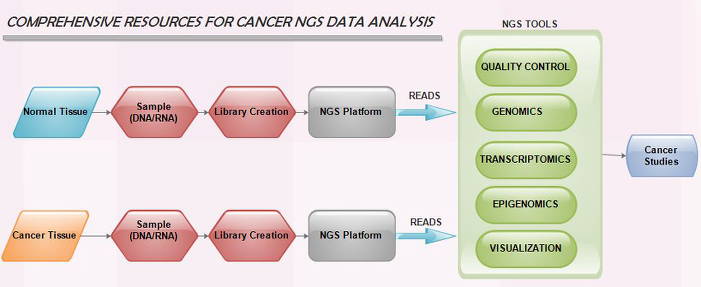

NGS is a recent innovation that empowers massively parallel sequencing reactions along these lines diminishing the specimen size and reagent costs. The sequencing process is manifold to permit concurrent sequencing reactions and analyze a huge number of samples. Procedures in NGS includes extracting DNA/RNA from sample, making library of sections that are each sequenced in parallel to short reads. Sequence reads are then reassembled by aligning them to a reference genome. In this way entire genome is obtained from arrangement of consensus reads.
The commercially available NGS platforms are 1.Roche GS-FLX 454 Genome Sequencer (454 sequencing) 2.Illumina Genome Analyzer (Solexa technology) 3.SOLiD analyzer 4.Polonator G.007 5.Ion/Proton PGM sequencing
Cancer is caused by mutations in Somatic or Germ line cells, NGS technologies play a critical part in diagnosis and treatment of cancer. Researchers are using NGS technologies to attain a deeper understanding of the tumor pathway. The majority of research focused on applying these innovations to study cancer progression and variations in germline DNA that impact cancer risk. The emerging sequencing methods guarantees monitoring progression and drug response in cancer cells. Various NGS tools have been developed to analyze and interpret the sequence reads.
NGS Tools for Data Analysis The exponential growth of NGS data with extensive cancer studies and development of new tools made easier for research community to analyze NGS data. The NGS tools can be classified into two Commercial packages and Open source tools. Some of the Commercial packages available are CLC Genomics Workbench, DNANexus, and GenomeQuest. Most commercial packages use proprietary algorithms to perform data analysis and are costly. In contrast to this some researchers have developed certain software tools that may be either standalone or web-based for the analysis of progressively large genome data and made these tools openly accessible to all.
NGS tools used in our web portal have been grouped into 5 categories as shown in Fig. 1. They are Cancer Genomics, Cancer transcriptomics, Cancer Epigenomics, quality control and Cancer genome Visualization. Different commercial and open-source tools are listed in these tools section which are restricted to the criteria that they are available either online or standalone and are strictly NGS tools.
Suggestions to include tools are always appreciated. Please send tool details( Tool name, URL, Category) as email to manonanthini@gmail.com